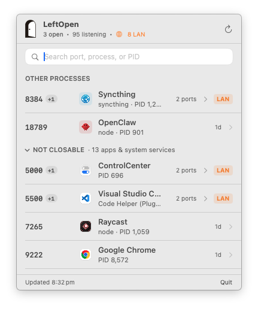

把那些虚掩着的门，
轻轻关上。
Close the doors
left ajar.
See what your tools left running on localhost — which project, which process, how long — and gently close them.
See what your tools left running on localhost — which project, which process, how long — and gently close them.
$ brew install --cask songhaifan/tap/leftopen
或者下载 LeftOpen.zip (v0.3.0)，解压后拖进「应用程序」。
Or download LeftOpen.zip (v0.3.0) and drop it into Applications.

它看到什么
What it sees
端口属于哪个项目
Whose port it is
沿工作目录向上找 .git、package.json、pyproject.toml、Cargo.toml、go.mod；全局 npm 包、python -m 模块、Redis / Postgres / Ollama 这类独立服务也按名字识别，不再只是一个 node。
Walks up from the working directory to .git, package.json, pyproject.toml, Cargo.toml or go.mod. Global npm packages, python -m modules and standalone services like Redis, Postgres or Ollama are named too — not just node.
真实图标，不预存
Real icons, nothing bundled
先取 .app 自带图标；再找项目或包自己带的（Tauri / Electron app icon、index.html 声明的 favicon、public/ 约定）；最后向本机服务器抓 favicon。LeftOpen 自己不打包任何第三方图标。
The .app icon when there is one; otherwise what the project or package ships itself (Tauri / Electron app icon, the favicon declared in index.html, public/ conventions); otherwise the favicon served by the local server. LeftOpen carries no third-party icons of its own.
先看该关的
Closable first
可关闭的端口排在最前，系统服务和 app 折叠收起。菜单栏用门的开合告诉你还有没有服务开着，每一行都标着它已经跑了多久。
Ports you can close come first; system services and apps fold away. The menu bar icon is an open or closed door, and every row shows how long the process has been running.
谁在局域网可见
Local or LAN
区分只绑在 127.0.0.1 的端口和绑在 0.0.0.0 / 局域网 IP 上的端口，开发接口意外暴露时一眼能看到。
Tells apart ports bound to 127.0.0.1 from ones on 0.0.0.0 or a LAN address, so an accidentally exposed dev server stands out.
它不做什么
What it won't do
关门的动作要轻。LeftOpen 只做请求，不做强迫，也不替你判断。
Closing a door should be gentle. LeftOpen asks; it never forces, and it never decides for you.
- 只发 SIGTERMSIGTERM only请进程自己清理退出。不
kill -9，不杀进程树，没有「强制」按钮。Asks the process to clean up and exit. Nokill -9, no process trees, no “force” button. - 关前校验Checks before closing关闭瞬间重新核对 PID 与启动时间，进程已换人就不动手；先列出同一进程的其他端口再让你确认。Re-checks PID and start time at the moment of closing and backs off if the process has been replaced; lists the process's other ports before you confirm.
- 不碰系统和 appLeaves apps and the system alone操作系统进程、别人的
.app、不属于你的用户——拒绝关闭，只展示。OS processes, other people's.apps, other users' processes — shown, never closed. - 零常驻，零遥测No daemon, no telemetry没有守护进程、LaunchAgent 或网络上报。只在面板打开和每分钟一次的刷新时做本地只读扫描。No background process, LaunchAgent or network reporting. A local read-only scan when the panel opens and once a minute.
为什么做它
Why it exists
当我并行让多个 agent 写代码时，开发服务器和测试服务会不断启动，监听不同的端口。忙完一天，电脑里往往留下不少还开着的服务。
现有工具要么太复杂，要么只能告诉你「端口被占用」，却说不清它到底属于哪个进程、可能来自哪个项目。
所以我做了 LeftOpen。它安静地待在菜单栏里，帮你一眼看清正在监听的端口、对应的进程，以及可能关联的项目。确认之后，你可以关闭那些不再需要的服务。
把那些虚掩着的门，轻轻关上。
When I have several coding agents working in parallel, dev servers and test runners keep starting up on different ports. By the end of the day there are always a few still running.
Existing tools are either too much, or only tell you “port in use” without saying which process it is or which project it came from.
So I made LeftOpen. It sits quietly in the menu bar and shows you the listening ports, the processes behind them and the projects they probably belong to. Once you've had a look, you close the ones you no longer need.
把那些虚掩着的门，轻轻关上。 — Close the doors left ajar, gently.
终端里也一样
Same thing in the terminal
App 里附带同一个引擎的命令行版本，装好就能用。归属推断、关闭前的校验、只发 SIGTERM——规则完全一致。
The app ships a CLI built on the same engine, available as soon as you install. Ownership inference, the pre-close checks, SIGTERM only — identical rules.
leftopen列出所有监听端口与归属List every listening port and its ownerleftopen 3000解释这个端口是谁的Explain who owns a portleftopen open 3000在浏览器打开 localhost:3000Open localhost:3000 in the browserleftopen close 3000请它退出（SIGTERM，先确认）Ask it to exit (SIGTERM, confirms first)leftopen --json给脚本和 agent 用的结构化输出Structured output for scripts and agents
$ leftopen LEFT OPEN 26 listening ports · 17 processes · 1 projects · 8 LAN-visible MY PROJECTS (2) PORT PID OWNER PROCESS AGE SCOPE 5173 76344 visdelta node 2h LOCAL ↳ ~/Documents/visdelta 5511 4999 visdelta node 27m LOCAL ↳ ~/Documents/visdelta SERVICES (3) PORT PID OWNER PROCESS AGE SCOPE 11434 911 Ollama ollama 1d LOCAL 8384 1231 Syncthing syncthing 1d LAN APPLICATIONS (16) PORT PID OWNER PROCESS AGE SCOPE 5000 696 ControlCenter Control 3d LAN 9222 36824 Google Chrome Chrome 5h LOCAL LOCAL = this Mac only LAN = may be reachable from your local network
常见问题
Questions
为什么不做一键强杀？
Why no force-kill button?
服务可能还握着没写盘的数据。SIGTERM 给它一个体面退出的机会；真要强杀，你在终端里 kill -9 只需要一秒，不必由 LeftOpen 替你决定。
A service may still hold data it hasn't written. SIGTERM gives it a chance to exit cleanly; if you really need to, kill -9 in a terminal takes a second — that call shouldn't be LeftOpen's.
图标是从哪来的？
Where do the icons come from?
全部来自你这台 Mac 上已有的东西：.app、项目仓库、npm 包目录，或本机服务器自己提供的 favicon。找不到就用一个符号，不会去网上下载。
Only from what's already on your Mac: .app bundles, project repos, npm package folders, or the favicon a local server serves. When there's nothing, a symbol — never a download.
安全与公证
Signing and notarization
由 Apple Developer ID 签名并经 Apple 公证装订，macOS Sonoma 上下载即可打开。源码 MIT 开源，Homebrew cask 的校验和与 Release 一一对应。
Signed with an Apple Developer ID and notarized, so it opens directly on macOS Sonoma. MIT-licensed source; the Homebrew cask checksum matches the GitHub release.